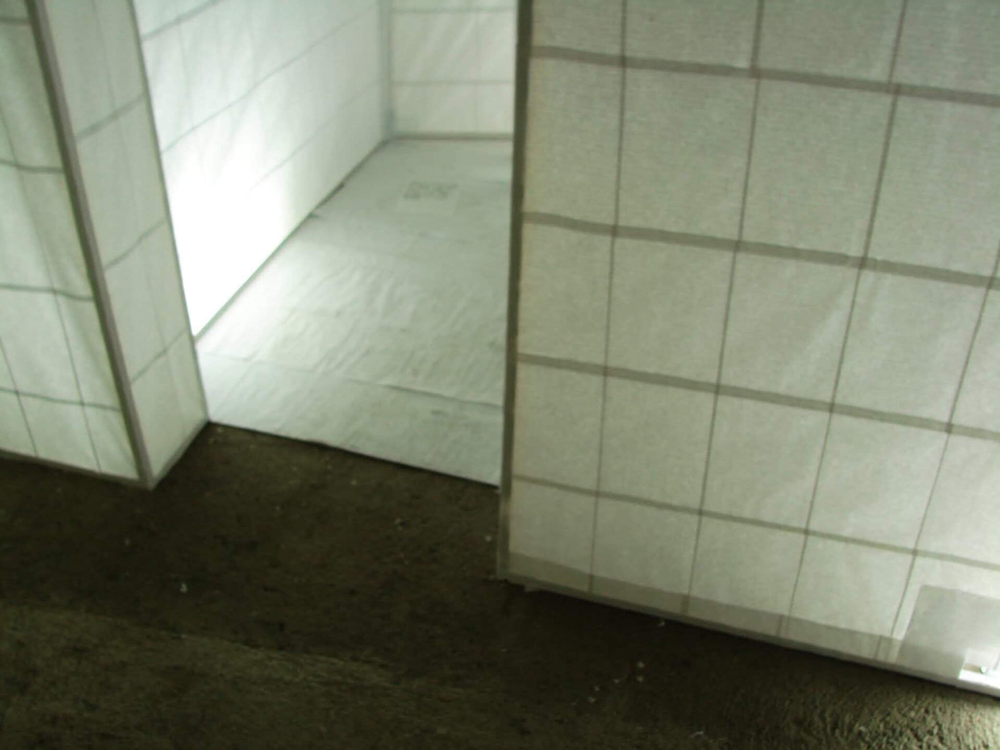
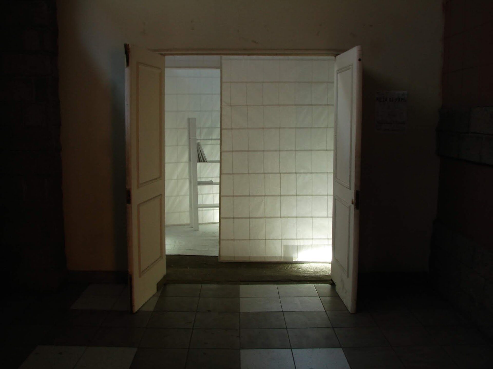
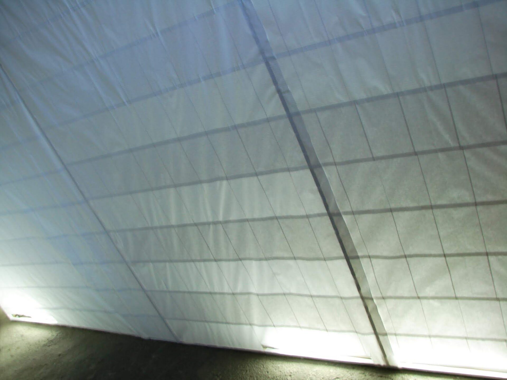
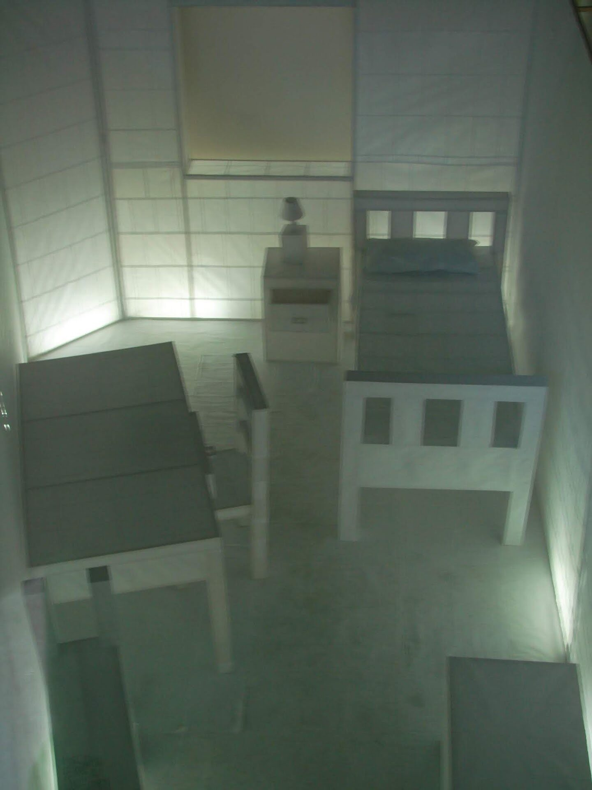

Dossier Nº 010
Pieza de Papel
Entre el 5 y el 18 de febrero de 2007 —dos días después de la explosión en calle Serrano— inauguré Pieza de Papel en la desaparecida sala El Círculo, lugar cedido por el Colegio de Arquitectos de Valparaíso.
La habitación de cuadernos
La experiencia fue montar una pieza de papel: construcción a escala real de la habitación donde vivía en ese momento, en el Cerro Cárcel de Valparaíso —cama, velador, lámpara, escritorio, silla, baúl, estantería con libros, suelo y muros, con el umbral de una puerta y el marco de una ventana— construida con alrededor de 40 cuadernos de líneas en blanco (4000 páginas) y una estructura de junquillos de 1×1.





UbicaciónVALPARAÍSO
33°03′S · 71°37′O